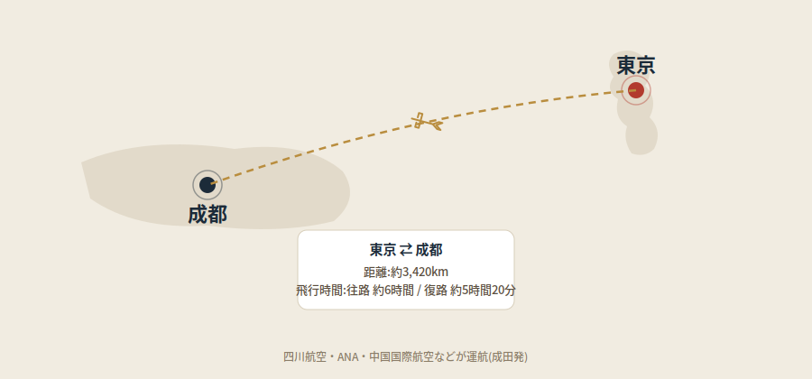

パンダの生息地として知られる成都ですが、実はこの街、中国国内でも独特の「生活を楽しむこと」を大切にする気風で知られています。この記事では、成都がどんな性格を持つ街なのか、その背景にある歴史や文化、そして東京からの行き方までまとめて解説します。
「天府の国」と呼ばれる理由
成都のある四川盆地は、古くから肥沃な土地と温暖な気候に恵まれ、「天府の国(豊かな土地)」と呼ばれてきました。食べるものに困らない環境が、北京や上海のような競争の激しさよりも、生活の心地よさ(安逸)を大切にする気質を育んだといわれています。地元の言葉で「耍(シュア)」という言葉がありますが、これは単なる「遊ぶ」という意味を超えて、成都の人たちの人生観そのものを表す言葉として使われています。
1万軒以上ともいわれる茶館文化
成都の生活を象徴するのが、街のいたるところにある茶館です。「一歩歩けば茶館にあたる」といわれるほどその数は多く、1万軒以上ともいわれています。観光客向けのおしゃれな茶館もあれば、住宅街の奥にひっそりとある、地元の人向けの茶席もあります。後者は「壩壩茶(バーバーチャー)」と呼ばれ、道端に卓と椅子を並べただけの気軽なスタイルで、お茶を飲みながらおしゃべりをしたり、伝統的なカードゲームに興じたり、時には居眠りをしたりと、思い思いに時間を過ごす人々の姿が見られます。一席5元(約115円)ほどで一日中いても構わないという、おおらかさも魅力です。
この茶館文化は学術的にも注目されており、成都の茶館を通して中国の社会や政治の変遷を読み解いた研究書が、海外の大学出版から刊行されているほどです。小さな茶館の風景が、実は大きな社会の縮図になっている、というわけです。
10人中9人が打てるという麻雀への情熱
成都のもう一つの顔が、麻雀への情熱です。「四川人は10人中9人が麻雀を打てる」ともいわれ、子どもの頃から大人たちが打つ姿を見て自然に覚える人が多いのだとか。暇なときはもちろん、結婚式の後や同窓会、時には法事の後にも麻雀が始まるという話もあります。
四川麻雀には「血戦到底(けっせんとうてい)」という独自のルールがあり、一般的な麻雀のように誰か一人が上がった時点で終了するのではなく、最後の一人になるまで勝負が続きます。真夏には、プールの中に浸かりながら麻雀を打つ「水中麻雀」が話題になったこともあり、成都の人たちの遊び心がうかがえるエピソードです。
東京からの行き方:距離と所要時間

東京(成田)と成都(成都双流国際空港)の間には、四川航空・ANA・中国国際航空・中国南方航空などが直行便を運航しています。距離は約3,420km、飛行時間は東京発が約6時間、成都発が約5時間20分程度です。上空の偏西風の影響で、行きと帰りで所要時間が異なります。
観光とグルメ
成都観光の定番といえば、成都大熊猫繁育研究基地でのパンダ鑑賞です。詳しくはパンダ基地、混雑を避けるコツで解説しています。また、グルメ(本場の四川料理は想像以上に辛いので要注意です)については成都グルメガイドをご覧ください。寛窄巷子や錦里といった老街を歩けば、茶館文化やスローライフの雰囲気を、観光客でも手軽に味わうことができます。
まとめ
成都は、肥沃な土地に育まれた「生活を楽しむ」気風と、1万軒を超える茶館、そして麻雀への情熱が織りなす、独特のスローライフ文化を持つ街です。パンダや辛い料理だけでなく、こうした街の性格を知っておくと、観光の楽しみ方も少し変わってくるかもしれません。
この記事の内容に古い情報や誤りを見つけた場合、あるいはご感想・ご質問がありましたら、お問い合わせまでお気軽にご連絡ください。